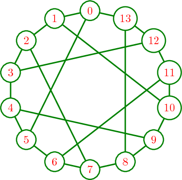
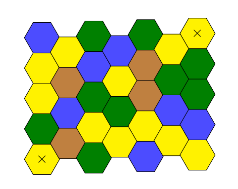

Tutorial I#
Acknowledgements: This worksheet is an English translation of the French version released for SageMath afternoons at UQAM and is broadly inspired by the exercices of Sébastien Labbé’s course Logiciels mathématiques, that are available online (in French only): http://www.slabbe.org/Enseignements/MATH2010/exercices.pdf
Some other parts come from Franco Saliola’s introduction to Sage worksheets or from SageMath documentation (the first thematic tutorial is here : https://doc.sagemath.org/html/en/thematic_tutorials/tutorial-notebook-and-help-long.html)
# Your answer here
Compute the number \(7 \cdot 17^2.\) To answer, create a new cell by clicking on the blue line that appears when hovering over it (in CoCalc), or type B in command mode.
Compute the result of \(540931 \div 83\) under decimal form.
# Your answer here
Compute the integer quotient and the remainder of the euclidian division of \(540 931\) by \(83\).
# Your answer here
Compute the sum and the mean of the following values: \(3121, 71072, 44563, 10986, 43048, 8081, 44681, 23757, 4093, 24805, 30750, 73504.\)
list1 = [3121, 71072, 44563, 10986, 43048, 8081, 44681, 23757, 4093, 24805, 30750, 73504]
# Your answer here
What operation is done first when computing 7 * 2 ** 5 + 3? Is the value equal to \(7 \cdot 2^{5+3}\)?
# Is the answer what you thought?
print(7 * 2 ** 5 + 3)
print(7 * 2 ** (5 + 3))
Consider the expression 3 ** 3 ** 3. What exponientiation \((**)\) is done first, the first or the second?
# Try it here
# Your answer here
Let \(p(x) = -21 x^5 - 10 x^4 + x^3 + x^2 - 1\). Evaluate \(p(x)\) for all values of \(x\) in \(\{ 6, 7, 9, 13, 16, 17, 19\}\).
# Your answer here
Write the expression \(\frac{5}{x+3} + \frac{3}{x-5} - \frac{8}{x}\) on a common denominator.
# Your answer here
Solve the equation \(x^4 - 4 x^3 + 2x^2 - x = 0\).
# Your answer here
Solve the equation system \(x+y = 4, xy = 3\).
# Your answer here
Find the equation of the line \(y = ax +b\) that passes through the points \((8,13)\) and \((5, 37)\).
var('a,b')
y(x) = a*x + b
# Your answer here
Plot that line.
# Your answer here
Plot the curves of the equations \( x + y = 4, xy = 3\) after having isolated the variable \(y\). Do the intersection points, if there are some, correspond to those you have obtained above?
# Your answer here
Plot the curves of the equations \( 4x^2 + Bxy + 9y^2 = 1\) for different values of \(B\) such that \(−10 \leq B \leq 10\). Deduce the range of the values of \(B\) for which the equation describes an ellipse.
# Continuous range for B
var('y', 'x', 'B')
ellipse(x, y, B) = 4 * x^2 + B * x * y + 9 * y^2 - 1
# Your answer here (the way to plot it)
# Discrete range for B
var('x, y')
# Your answer here
# They are all ellipses
It is possible to go backwards and modify the content of a cell by clicking on it (or entering the edit mode by typing enter). Without retyping, nor copying, find the equation of the line that passes through \((8, 13)\) and \((18, 26)\).
It is also possible to modify this text by clicking on it. Or even better, you can insert mathematics in \(\LaTeX\)!
Obtain some help#
There are different ways to access SageMath documentation.
Navigate in the documentation : https://doc.sagemath.org/html/en/tutorial/index.html or, on your computer, http://localhost:8888/kernelspecs/sagemath/doc/index.html (the exact url may vary depending on the address of your kernel).
The Tab-completion
The contextual help (with the question mark - ?)
The access to the source code (with the two question marks - ??)
The following examples are made to make you at your ease with those functionalities.
What is the largest prime factor of \(600851475143\)?
# Your answer here
Create the permutation \(51324\). What is its inverse?
# Your answer here
Create the matrix $\( M = \left( \begin{array}{rrrr} 10 & 4 & 1 & 1 \\ 4 & 6 & 5 & 1 \\ 1 & 5 & 6 & 4 \\ 1 & 1 & 4 & 10 \end{array} \right) \)$ Is it symmetric? Diagonalizable? Hermitian? (And what means hermitian, by the way? If you don’t know or have forgotten, find it in the documentation.) What is its kernel?
M = Matrix(QQ, [[10,4,1,1], [4,6,5,1], [1,5,6,4], [1,1,4,10]])
# Your answers here (you can print them all)
print("Is M symmetric?", M.is_symmetric())
M.is_diagonalizable()
Trace the curves of the equations \(\sin(3x +2)\) in blue and \(\cos(x^2+3)\), in red. Indicate the axes.
# Your answer here
II. Python basics for using SageMath#
The goal of this sequence of exercises is to make yourself familiar with some particularities of Python. If you ever programmed before, either in Python or in another language, this worksheet should be rather simple. The sections are in increasing difficulty.
For this worksheet, exceptionally, one does not require SageMath, so the kernel (computer doing the calculation) can be set to Python 3.
Python Syntax#
Python has a very lightweight syntax. There is no curly bracket, semicolon of other elements that would influence the structure of the code.
On the other hand, the indentation is fundamental. To describe the content of a block, we move it 4 spaces right of its header. The header ends with a colon.
Predict the output of each of the following blocks.
sum_of_numbers = 0
for i in range(10): # If you do not know what range(n) is, try it!
sum_of_numbers = i + sum_of_numbers
print(sum_of_numbers)
and
sum_of_numbers = 0
for i in range(10):
sum_of_numbers = i + sum_of_numbers
print(sum_of_numbers)
Check your answers by copying it into Python!
Python Syntax#
Indentation is crucial in Python. This is achieved through 4 spaces at a time or, equivalently, a tab. If you enter 3, 5, or 8 spaces instead, the program will refuse to run.
A block is some part of the code that has the same indentation. You can think of it as something within parenthesis in math, so this is all executed at the same level of priority.
The difference between the two
sum_of_numbers = 0
for i in range(10): # If you do not know what range(n) is, try it!
sum_of_numbers = i + sum_of_numbers
print(sum_of_numbers)
and
sum_of_numbers = 0
for i in range(10):
sum_of_numbers = i + sum_of_numbers
print(sum_of_numbers)
is … [Enter your answer here].
for and while Loops#
If you ever programmed, you should probably skip this section.
Predict the output of the following two functions:
s = str()
for i in ['a', 'b', 'c', 'd']:
s = s + i
print(s)
and
import sympy
s = 0
i = 1
while i < 100:
s += sympy.prime(i) # Challenge: Guess what sympy.prime(i) does
i += 1
print(s)
In general, what do while and for do?
# Try the first loop here
# Try the second one here
sympy.prime(i) returns …
# Compute your answer here, and write the answer below.
Compute the value of \(65!\).
from numpy import prod
# Your answer here
Does that make any sense? Can you think of what happened?
from math import factorial
# Your answer here
Data structures#
Lists, sets and dictionaries#
Try to understand the behavior of these three structures with the functionssort, first element and keys.
struct1 = {'a': 'Alligator', 'b': 'Beluga'}
struct2 = dict([('a', "Alligator"), ('b', "Beluga")])
struct3 = ['Alligator', 'Beluga']
struct4 = {'Alligator', 'Beluga'}
struct5 = list(struct4)
struct6 = set(struct3)
struct7 = set(struct1)
Which of these are sets, lists and dictionaries? What specificities do each have?
struct1 = {'a': 'Alligator', 'b': 'Beluga'}
struct2 = dict([('a', "Alligator"), ('b', "Beluga")])
struct3 = ['Alligator', 'Beluga']
struct4 = {'Alligator', 'Beluga'}
struct5 = list(struct4)
struct6 = set(struct3)
struct7 = set(struct1)
# Play with the data structures
To what structure do “Alligator” and “Beluga” not belong?
Your answer here, as text
map and zip functions#
This sections features two functions that are Python-specific and that operate on lists, namely zip andmap.
zip takes two lists of the same length, and creates a new list of tuples for each pair of items. Thus, the first tuple of the new list contains the two heads of the original lists.
map uses a function and an iterable (a list, a tuple, etc.). It applies the function to each element of the iterable. Here are some examples for the map len, prod, sum, min, max, set and sorted.
With the following lists, try the functions zip and map.
l1 = [3, 4, 5, 6]
l2 = [10, 15, 20, 25]
l3 = ['a', 'b', 'c', 'd']
l4 = [7, 11, 13, 17, 19]
l1 = [3, 4, 5, 6]
l2 = [10, 15, 20, 25]
l3 = ['a', 'b', 'c', 'd']
l4 = [7, 11, 13, 17, 19]
# Play with them
Can you get the sum of the elements of the first list?
# Your answer here
What happens if zip is applied to more than one list?
# Try it!
What happens if zip is applied to lists with distinct lengths?
# Try it!
Only with the functions presented here, compute the dot product of l1 and l2.
# Your answer here
Try to reproduce the same result with built-in functions.
# Works only with Sage
# vector(l1) * vector(l2)
# With numpy: enter your code here. You might have to search the documentation.
Functional programing with Python: lambda#
The lambda funciton is a way to create a simple function as a one-liner. Its syntax is as in the following example:
addition = lambda x, y: x+y
Define and use a function called power, using the lambda function.
# Your answer here
III. Combinatorial sequences with SageMath#
Stirling numbers#
Question 37 from Per Alexandersson’s notes
How many permutations in \(S_{10}\) are there of type \((2, 2, 2, 2, 1, 1)\)?
This can be solved through many ways:
Multinomial coefficients, as you learned in the course
Brute force: generating permutations of 10, filtering, then counting
# Using multinomial coefficients. If you don't know how to get multinomial coefficients, search the documentation or
# ask another student
4725
p = Permutations(10).random_element()
# Generating permutations of 10, filtering, counting.
# WARNING: you'll need to be clever to do it without making SageMath crash.
# If this takes too long, interrupt your computations with the square above, and try to
#g et the number of permutations type. That will be handy later
4725
# Another technique that we will explore in more details later this week is to gather information for many
# instances (here partitions), and then to supply this information to a database.
data = []
for n in range(1,5):
for p in Partitions(n):
count = 0
for sigma in Permutations(n):
if sigma.cycle_type() == p:
count += 1
data.append((p, count))
dict(data)
{[1]: 1,
[2]: 1,
[1, 1]: 1,
[3]: 2,
[2, 1]: 3,
[1, 1, 1]: 1,
[4]: 6,
[3, 1]: 8,
[2, 2]: 3,
[2, 1, 1]: 6,
[1, 1, 1, 1]: 1}
The code above is very naive, but it still works because the number of objects is small.
Later this week, we will see a process for finding out the name of this statistic, using the FindStat database. Here is a preview.
findstat(data, depth=0)
The Combinatorial Statistic Finder (https://www.findstat.org/) provides a new collection:
Cc0030: Ordered set partitions
To use it with this interface, it has to be added to the dictionary
_SupportedFindStatCollections in src/sage/databases/findstat.py
of the SageMath distribution. Please open an issue on github!
0: St000182 (quality [100, 100])
findstat(182)
St000182: The number of permutations whose cycle type is the given integer partition.
Looking at the documentation for Statistics with Id 182 in FindStat, we see that there is a product formula to count them. It is worth having a look (to do so, execute the next cell).
_.browse()
Another potential, less naive methods for generating all permutations with a given cycle type:
T = SetPartitions(10, [2,2,2,2,1,1]) and then T.random_element() to get a partition into cycles. Because all cycles have length at most 2, there is a unique such permutation for each set partition. Then form all possible permutations from them.
Applying SetPartitions along with cardinality, we get the right answer.
We could also inspect cardinality to see how this is calculated:
S = SetPartitions(range(1,11), [2,2,2,2,1,1])
S.cardinality?
Sieving#
Question 55 from Per Alexandersson’s notes:
How many numbers from {1, … , 100} are divisible by either 3, 5 or 11?
This is also the number obtained using inclusion-exclusion.
Number of derangements#
Question: Secret Santa
For the end of the ICTP-EAUMP school, we will organize a gift exchange. We will put a bowl with all the names in it, and ask every participant to draw one name. The exchange is successful if no one draws their own name. What are the odds, roughly, that this happens?
In the previous lectures, you learned how to do it using inclusion-exclusion, and you might have learned how to find the asymptotics. What I’m suggesting here is a method for approximating the answer, done through sampling.
Idea: simulating 1,000 (or more, or less) gift exchanges (uniformly at random), and see what proportion is successful.
Generating 1,000 permutations of 40, and checking if they have fixed points = EASY
Generating all 40! permutations of 40 and checking if they have fixed points = IMPOSSIBLE
This method has the advantage of not requiring knowledge about derangements (permutations without fixed points).
# Find a way to generate 1,000 permutations of 40, at random. Count the number of successful exchanges.
377
Hence, we would estimate that around 35-40% are successful. The actual proportion is \(e^{-1}\).
Finding the exact answer requires a proof, and knowledge. Finding exact asymptotics too.
Simulation allows one to get a very good rough idea of how big a quantity is.
Eulerian numbers#
Recall from Per Alexandersson’s lecture that the Eulerian number \(A(n,k)\) is the number of permutations of \(S_n\) with exactly \(k\) descents. Recall that for \(\pi \in S_n\), a descent in the permutation \(\pi\) is an index \(i \in [n − 1]\) such that \(\pi(i) > \pi(i + 1)\).
Write some code to compute the Eulerian number \(A(10,4)\).
# Write a function called 'my_eulerian_number(n, k)' that computes A(n, k)
n = 10
k = 4
%time my_eulerian_number(n, k)
A method called ‘eulerian_number’ exists in sage.combinat.combinat. Import the appropriate module (like we did in the lecture for the Narayana numbers), then evaluate how much time it takes to execute it (for \(n=10\) and \(k=4\) again). We will use it to compare our results.
# Your answer here
We see that we get the same number, but the built-in methods is much faster. This is a hint that we should look at the code for eulerian_number
eulerian_number??
We see that it uses a recursion. In Per Alexandersson’s course, you learned that $\(A(n, k) = (n − k)A(n − 1, k − 1) + (k + 1)A(n − 1, k).\)$
Now use it to write a fast method for eulerian numbers. It might have to be recursive (so calling the same method over a smaller instance).
# Write a function called `my_eulerian_number_fast(n, k)`.
%time my_eulerian_number_fast(10, 4)
However, this methods gets pretty slow when \(n\) and \(k\) grow, especially in comparison with eulerian_number. This is because it computes many times the same things. Execute the two cells below to see the time difference.
%time my_eulerian_number_fast(30, 7)
%time eulerian_number(30, 7)
We can avoid this by caching the result of our previous computations. This will require a little more memory, but so much less time. This is achieved through a decorator, so something we put right before the start of the function.
Write a cached function, by doing the same thing as before, but adding @cached_function on the line before the definition.
# Your answer here
%time my_eulerian_number_fast(30, 7)
Bonus exercise: Come up with another combinatorial calculation where the use of the decorator @cached_function could be helptul. Test your hypothesis by writing the code for it, both with and without decorator.
IV. Combinatorial sequences with SageMath#
Exercise from Professor Balázs. See how faster it is with SageMath!#
With the help of SageMath, write the following in partial fraction form. For each of them, add a Markdown box with the answer. $\(\frac{1}{1-x^2}, \frac{1}{2-3x+x^2}, \frac{1}{1+x^2}, \frac{1}{1-x^3}.\)$
Bonus exercise: if the decomposition over \(\mathbb{Q}\) is not satisfactory, decompose over \(\mathbb{R}\) or \(\mathbb{C}\).
# Your computations here. Your answer should be in a Markdown box that you add below.
# One can always verify their work
# Your computations here. Your answer should be in a Markdown box that you add below.
# Your computations here. Your answer should be in a Markdown box that you add below.
# Your computations here. Your answer should be in a Markdown box that you add below.
Exercise from Professor Balázs, with some extra prompts. See how faster it is with SageMath!#
For each of the following recursions, find the generating function, the OEIS identifier (if you have internet) and the 100th term. If you can, find a closed form for the general term. Write your answer in a separate Markdown box.
\(a_0=1\), \(a_{n+1} = 5 \cdot a_n\)
\(a_0=0\), \(a_1 = 1\), \(a_{n+1}= a_{n-1}\)
\(a_0=0\), \(a_1 = 1\), \(a_{n+1}= -a_n-a_{n-1}\)
\(a_0=0\), \(a_1 = 1\), \(a_{n+1}= 3\cdot a_{n}-2\cdot a_{n-1}\)
# Your computations here. Your answer should be in a Markdown box that you add below.
# Your computations here. Your answer should be in a Markdown box that you add below.
# Your computations here. Your answer should be in a Markdown box that you add below.
# Your computations here. Your answer should be in a Markdown box that you add below.
A challenge problem!#
Find a symbolic expression for the number of Motzkin Paths of length n. Hint: mimic the one Professor Hans gave for Dyck Paths: \(F = 1 + xF^2\). Justify. You should work as a team for that, and feel free to use the help of the TA’s and instructors. You don’t need SageMath for that step.
Solve it. You will get two answers, so you need to check which one is the right one.
If internet available, check, with the OEIS, that this is the sequence for Motzkin numbers. Also, check that the generating function listed there is right.
Browse the formulae in the OEIS to find those that Professor Hans asked us to prove.
Browse the formulae in the OEIS to answer the question of how many times more Motzkin paths of length 101 there are compared to Motzkin paths of length 100. No computation is needed.
Compare your hypothesis with the ratio of the 100th and 101st coefficient of the generating function you found.
Find a symbolic expression for the number of Motzkin Paths of length n. Hint: mimic the one Professor Hans gave for Dyck Paths: \(F = 1 + xF^2\). Justify. You should work as a team for that, and feel free to use the help of the TA’s and instructors. You don’t need SageMath for that step.
Pass it on to SageMath
# Your work here
Solve it. You will get two answers, so you need to check which one is the right one.
# Your work here
# Write your answer here.
print(f"The generating function is ...")
The generating function is ...
If internet available, check, with the OEIS, that this is the sequence for Motzkin numbers. Also, check that the generating function listed there is right
# Your work here
Browse the formulae in the OEIS to answer the question of how many times more Motzkin paths of length 101 there are compared to Motzkin paths of length 100. No computation is needed.
Browse the formulae in the OEIS to answer the question of how many times more Motzkin paths of length 101 there are compared to Motzkin paths of length 100. No computation is needed.
Write your answer here.
Compare your answer to what you get by extracting the 100-th and 101-th terms of the generating function, and taking the ratio.
# Your work here
How close is it to your hypothesis? Write something about your comparison.
Finding a recurrence from a generating function#
Here is a linear recurrence, expressed in the form of a generating function $\(\frac{x}{-4x^3 - 5x^2 - 7x + 1}.\)$ Can you find the recurrence?
# Pass the generating function to SageMath
# Find the recurrence
V. Graph Theory with SageMath#
Graph creation#
Create the following graph in at least two different manners. You should see the SageMath documentation to see what ways are admissible.

# Your work here
Now that you generated the graph, ask SageMath what the diameter is, find the diameter of the graph, and plot on the graph one of the shortest paths between the vertices that are the furthest apart (so a “proof” of the diameter).
# Your work here
Task assignment#
Twelve robots have to perform twelve tasks. To each robot is associated a subset of the tasks corresponding to its abilities. Both robots and tasks are identified by an ID from 0 to 11.
To fix the ideas, let us assume that the association is given by the following Python dictionary that associates to each robot the list of its abilities::
sage: abilities = {0: {2,3,4},
....: 1: {1,7,11},
....: 2: {0,9},
....: 3: {4},
....: 4: {3,5,11},
....: 5: {0,2,4},
....: 6: {1,6,9},
....: 7: {10},
....: 8: {3,5,7,9},
....: 9: {1,2,3},
....: 10: {2,4,6,8},
....: 11: {5,10}}
Could you distribute the tasks among the robots so that each robot gets one task corresponding to its abilities and such that every task is accomplished?
Note: To solve this problem, you should create a graph. Once that your graph is created, see if you can find a perfect matching between the robots and the abilities. Be aware that robot0 should not be the same vertex as task0!
I want you to list one assignment of the task. Even better, you could draw the corresponding edges between the selected tasks and the robots in a distinct color!
Challenge problem. Shortest path#

Consider a board game in which players play on a hexagonal grid. Each box is of one of the following zone: water (blue), plains (yellow), forest (green) or mountains (brown). The time to cross each box is given here:
Water: impossible
Plains: 1 hour
Forest: 2 hours
Mountains: 5 hours
What is the shortest time to get from the bottom left corner to the top right corner of the map above? Don’t count the time to get out of the first box, but count the time to enter the last one. I recommend creating a graph to solve this problem.
How many shortest paths are there?
Draw one shortest path (or list the boxes in order) from the bottom left corner to the top right corner. (e.g. plains - forest - plains - plains - water is a path from the bottom left corner to the top left corner).
Note: I think that the main difficulty here is to come up with the right graph. Then, SageMath will do the work for you.